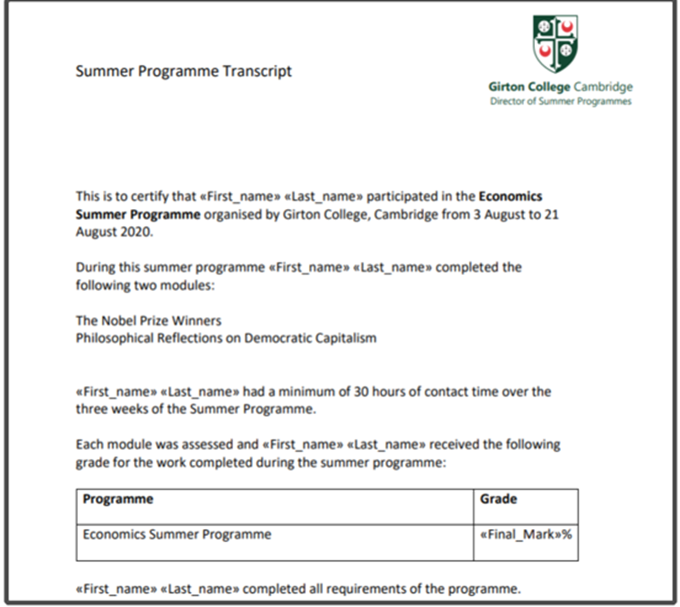

学院通知 · 教学通知
【大川视界】关于选派本科生参加2025年暑期英国剑桥大学国际组织项目（非学分）的通知
发布时间：2025-03-03
根据学校“大川视界”大学生海外访学计划的相关政策，即日起启动2025年暑期英国剑桥大学国际组织项目（非学分）的报名工作，报名截止日期：即日起至3月23日，现就有关事项通知如下： 一、项目时间： 学生可选以下任意一期参加 第一期：2025年7月21日 – 8月1日（7月20日抵达，8月2日离开） 第二期：2025年8月4日 – 8月15日（8月3日抵达，8月16日离开） 二、项目简介 1. 项目为期两周，包含总共24个小时的授课时间（相当于32学时）； 2. 授课形式将包括系列专题讲座与研讨会。 学生在讲座前需阅读若干篇老师布置的阅读材料，并准备笔记。 在研讨会期间，学生将充分运用文献和讲座中的关键理念，进行独立研究，或开展小组合作，提升自己的研究技能； 3. 项目详情见附件1：2025年暑期英国剑桥大学国际组织项目（非学分）介绍。 三、项目费用 项目总费用 人民币3.38万元/人 费用包括： 学费、校内住宿、学校设施使用、餐费 （学生 餐卡内每周发放75英镑供在校内食堂刷卡自由使用，以及项目所安排的晚宴与下午茶费 ） 、文化体验活动、医疗与意外保险、接送机以及 签证指导等各类 项目服务费 费用不包括： 中英往返各程机票、英国签证费、与其它个人花费 优惠条款： 凡在 2025 年 3 月23 日（含）前完成校内报名且后期全额缴纳项目费用的学生，可享受人民币 500 元/人的优惠。 四、项目收获 项目学生由剑桥大学进行统一的学术管理与学术考核，顺利完成学习后，学生将获得剑桥大学颁发的成绩单与项目证书。 图：项目证书与成绩单样图 五、项目选派条件： 1. 思想政治：拥护中国共产党的领导、热爱祖国、品德优良、身心健康，遵守国家法律法规、学校规章制度，无纪律处分； 2. 年级专业：全日制非毕业年级在校本科学生，专业不限，出发前须年满18周岁，本科一年级需修满一个学期的课程，且不得与军训时间冲突； 3. 语言能力：有良好的英文交流沟通能力，具备优秀的英语基础，达到托福79，或雅思6.0，或大学英语四级500分，或大学英语六级470分，或专四/专八通过，或Duolingo105，或Versant 51；大一学生可接受高考128分以上，能用英语学习和交流； 4. 综合表现：成绩优良，具有较强的学习能力，有独立海外生活能力，能迅速适应新环境；遵纪守法，在项目期间尊重课程组安排。 六、 报名时间及方式 1. 校内申请时间：即日起至2025年3月23日 2. 校内申请流程：填写附件2：“大川视界”非学分项目申请表，经学院审核签字盖章后，将申报表电子档（扫描件） 及相关英语成绩支撑材料发送至xgb-fzzx1@scu.edu.cn 。 3. 校内组织单位审核通过申报材料后，将以邮件通知方式告知。后续，由国际合作与交流处组织报名缴费的相关工作。 4. 为保证出行顺利，请在报名成功后及时告知学院辅导员，并在出国（境）前完成“七、出国（境）备案流程”。 七、出国（境）备案流程： 四川大学在籍学生在出国或前往港澳台地区交流学习前，必须通过四川大学学生出国（境）网上备案系统办理备案。备案之后，出国、赴港澳、赴台后续办理程序有所不同，请根据不同目的地选择相应程序。未经备案，学校将不予办理财务报销、成绩认证、学分转换等相关手续和服务：https://global.scu.edu.cn/?channel/490/504 八、咨询电话： 党委学生工作部 028-85460907（报名咨询） 国际合作与交流处028-85404255（项目咨询） 剑桥国际组织项目方中国办公室：牟老师 199-8204-9469（微信625134216）（项目、选课、护照、英国签证咨询等） 九、项目宣讲 第一场：3月7日（周五）19:00-20:00 腾讯会议号：461-749-898 第二场：3月14日（周五）19:00-20:00 腾讯会议号：134-891-136 附件1 2025年暑期英国剑桥大学国际组织项目（非学分）介绍 附件2-“大川视界”非学分项目申请表 <!--
